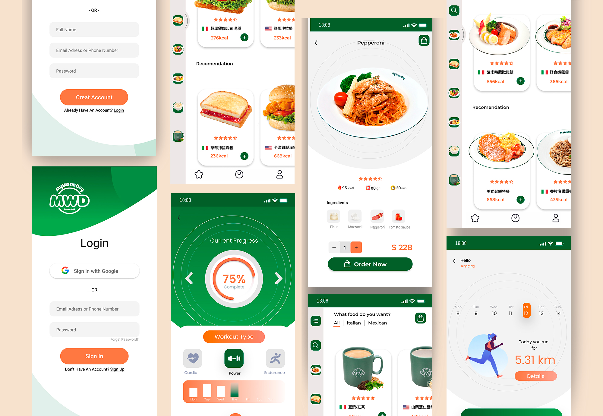

InnoConnect+ 全國服務創新跨界共創大賽
銀獎
2022年10月-2023年1月
比賽期間-4個月
擔任角色-APP畫面視覺流程設計、企劃
負責項目-視覺呈現、功能規劃、設計完稿、企劃撰寫
揚秦國際企業股份有限公司_麥味登
My Warm Day麥味登第一家創始店成立。這個自台灣發跡的人氣餐飲品牌，My Warm Day（縮寫MWD）為「溫暖每一天」的涵義，若以「麥味登」的台語讀音，更有「賣袂斷」的好意兆!
品牌定位與介面設計
在現今app已經發展成熟的情況下，需要透過嶄新且清新的形象呈現，使脫穎而出且具高適讀性。因此介面的風個與配色上，參考了許多蔬食餐廳以及植栽相關品牌，盼能萃取其自然、綠意與健康等形象元素於其中，並將UIUX以模組塊的形式作為編排基底。

視覺畫面呈現
以下圖示是以麥味登為範例做呈現，將重點放在模組化介面的自由排序，並於公司產品旁放上熱量等原料資訊。其中，添加品項種類智慧搜尋功能協助使用者可以依照目前的飲食偏好去做快速過濾。此外，也希望能夠透過此平台，讓參與企業能夠觸及到更多消費者增加曝光度，達到除了營養資訊的提供外額外的行銷紅利之一。
登入會員註冊畫面
選擇易讀且符合品牌風格的字體，確保字體大小和排版適中，使得內容易於閱讀。適當的行距和段落間距也能提升閱讀體驗。
餐點熱量選擇
使用高質量的圖片和圖示可以增強視覺效果，確保圖片和圖示與品牌形象一致，並在需要的地方使用吸引人的視覺元素。確切的熱量數值能讓使用者迅速看到，避免過多的視覺元素和混亂的設計，並推薦最適合使用者的餐點。
創意發想過程
組織團隊進行頭腦風暴，多元化的團隊一同參與，開放性地討論問題，尋找各種可能的解決方案集思廣益，發掘創意點子。
市場調研分析
收集相關的資料和信息，進行市場調查，了解目標用戶的需求和偏好。同時，進行競爭分析，研究已有類似APP的特點、優勢和劣勢，找到差異化的創新點。
功能特色比較
分析各APP之功能特色，擷取與分析優劣勢，提升APP設計之使用、功能性。
成果照片